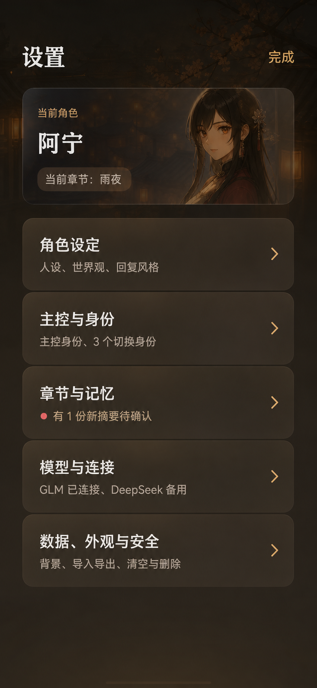

<!doctype html>
<html lang="zh-CN">
<meta charset="utf-8">
<title>Settings QA comparison</title>
<style>
  *{box-sizing:border-box}body{margin:0;padding:24px;background:#0b0b0b;color:#eee;font-family:system-ui,sans-serif}
  main{display:flex;align-items:flex-start;justify-content:center;gap:28px}
  figure{width:390px;margin:0}figcaption{margin-bottom:10px;color:#d8b76f;font-size:14px;font-weight:700;text-align:center}
  img{display:block;width:390px;height:844px;object-fit:cover;border:1px solid #4a4035;border-radius:16px;background:#171411}
</style>
<main>
  <figure><figcaption>设计基准：方案 1</figcaption></figure>
  <figure><figcaption>工作树实现：390 × 844</figcaption></figure>
</main>
</html>
